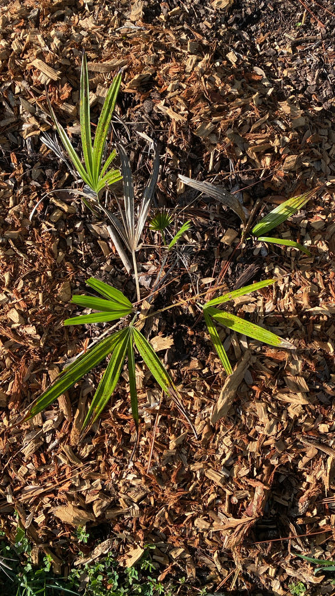

- The Needle Palm is among the most cold-hardy palms in the world. One specialist nursery recorded an established plant surviving -9°F with no protection and no damage — extraordinary for a palm native to the subtropical Southeast.
- What looks like a shrub is a single palm with almost no trunk. It spreads by sending up new shoots from its own base, so a large clump is usually one plant that has been widening slowly for decades.
- Rhapidophyllum hystrix is the only member of its genus — a monotypic genus found nowhere outside the southeastern United States.
- Tiny weevils in the genus Notolomus are thought to be the palm's principal pollinators, drawn to the flowers by their musky scent. In fall, the ripe fruits smell genuinely terrible to people — but bears and other mammals eat them willingly and carry the seeds away.
The Needle Palm is native to the southeastern United States, from South Carolina south through Georgia and Florida and west through Alabama to Mississippi. In Florida it grows in rich, moist woodlands, hydric hammocks, bottomland forests, slope forests, and seepage swamps, most commonly where limestone lies near the surface.
This is one of Florida's native palms, though its natural Florida range is concentrated farther north and inland than Palma Sola. It is officially classified as a facultative wetland plant, meaning it turns up most often in wet habitats but is not confined to them.
- The Needle Palm is extraordinarily slow-growing and long-lived — the Florida Native Plant Society cites a likely lifespan of more than 50 years. A large, established clump may represent many decades of quiet growth, and the dense, spiny base makes transplanting a mature specimen a formidable undertaking.
- The species name hystrix is the ancient Greek word for porcupine — the same root that gives us the alternate common name Porcupine Palm. The genus name Rhapidophyllum combines rhaphis (needle) and phyllon (leaf), a nod to the leaf segments' similarity to those of Asian fan palms in the genus Rhapis.
- Florida lists the Needle Palm as a commercially exploited native plant because wild specimens have been dug from natural populations for the nursery trade. Florida regulates the harvest of commercially exploited plants, and nursery-propagated stock is the responsible choice.
Dense clumps provide shelter for small animals, ground-nesting birds, and reptiles. The spiny base deters most predators and makes the interior of a large clump one of the more secure retreats in the Florida understory.
In fall the reddish-brown fruits are eaten by mammals, including black bears, and by birds, which carry the seeds away from the parent clump.
In wild populations, the Needle Palm spreads primarily by producing new shoots from the base — a large clump may therefore be a single, slowly expanding plant rather than many unrelated seedlings. Seed reproduction also occurs, though germination is slow, typically taking six to twelve months.
Male and female flowers are usually found on separate plants, although both types of inflorescence can occur on a single individual.
Small, yellowish-brown, borne in dense clusters that emerge from within the spiny leaf sheaths — effectively hidden from view. They appear in spring to early summer and carry a musky scent.
Female plants produce small roundish to oval drupes about an inch long, covered in brownish woolly hairs and ripening to reddish-brown in fall. Each holds a single seed.
Fan-shaped (palmate), glossy dark green above and pale silvery-green beneath, reaching up to 30 inches across and divided deeply into many narrow, stiff segments.
Essentially stemless or very short-stemmed; what looks like a trunk is a dense mass of fibrous old leaf bases. The spines emerge from those bases, projecting outward from the plant's centre.
From a safe distance, look toward the center of the clump near ground level: the long black needles projecting from the fibrous matting are the plant's signature, and they are worth a close look — but do not reach in. Notice that while the base is heavily armed, the long stems holding the fan-shaped fronds above are completely smooth and free of any teeth or barbs.
Look up into those fronds: shiny, deep green on top, pale and distinctly silvery-green underneath, each leaf divided deeply almost to its center. Then look back toward the base, deep inside the needle cluster — in spring you may spot tight, fuzzy bunches of yellowish-brown flowers.
In fall, look for small, fuzzy reddish-brown fruits tucked safely away from anything that cannot squeeze past the spines.
The rigid black spines around the base are the primary hazard — needle-sharp and capable of causing serious puncture wounds. Do not reach into the centre of the clump, and keep children and pets from playing around the plant. Take particular care when walking or working close to it.
No toxicity from ingestion has been documented for people or dogs.
At Palma Sola, set the Needle Palm beside the other palms in the collection: fan-shaped leaves and a low spiny clump against tall smooth trunks. It is the only palm here that never rises to meet you.
- © David Vanderbilt (CC-BY-NC), via iNaturalist